What are you building?
Creativity, food, water, energy, manufacturing, trade, governance, arts, intelligence and the long future. A Pillar connects a project with a practical domain and the work needed to develop it.
Explore the Pillars ↓The Council of Aura / the original two-stream architecture
Twelve Civilisation Pillars bring practical realms of knowledge. Twelve Cultural Anchors bring identity, heritage and values. Begin with a pair, then invite the other perspectives your work needs.
A mythic interface to a much deeper system
The Queens are deliberately different mythic mentor archetypes. Their names, realms, cultural identities, gifts and colours belong to the original architecture; they are more than interchangeable seats on a review board.
Creativity, food, water, energy, manufacturing, trade, governance, arts, intelligence and the long future. A Pillar connects a project with a practical domain and the work needed to develop it.
Explore the Pillars ↓The original cultural and identity strands connect enterprise with heritage, relationships, memory and chosen values. Select the Anchor that speaks to your context rather than having the system infer one.
Explore the Anchors ↓Aura is herself a Pillar: AI coherence, ethics and intelligence systems. Her original gift joins alignment, narrative and swarm orchestration. She can coordinate a pair or a wider session without replacing either mentor.
Explore Aura’s role ↗Begin with the dual mentorship
Choose the practical question and the personal or cultural lens you want to explore. The examples suggest a working pair and a few guests; you can change every choice.
Choose a Pillar and an Anchor to see how their original gifts can work together.
This prepares a reusable brief. A live, grounded council and persistent project memory are implementation work to develop and test. No AI service is called here.
Bring your choice to the pair ↗The twelve Civilisation Pillars
Each profile restores the original domain, archetype, cultural identity, gift and colour, alongside its full approach, source questions, working session and proposed creative applications.
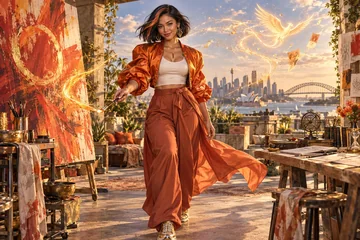
Civilisation Pillar
Creativity, ignition, early-stage spark
Filipina-Australian
Her original gift: Playful idea jams, courage to start tiny & joyful
Meet Spark in depth ↗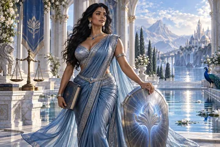
Civilisation Pillar
Law, protection, funding basics
Indian-Australian
Her original gift: Teach how to guard IP, contracts, safe scaling
Meet Shield in depth ↗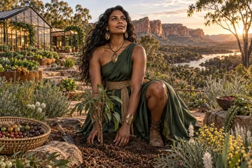
Civilisation Pillar
Food systems, regenerative habitat
First Nations Australian
Her original gift: Practical roots — co-ops, gardens, circular loops
Meet Seed in depth ↗Civilisation Pillar
Scale, rebellion, disruption
Sudanese-Australian
Her original gift: Bold PR, campaigns, making noise for good
Meet Storm in depth ↗Civilisation Pillar
Big-picture vision, civilisation arcs
Celtic-East Asian
Her original gift: Long-term strategy, existential alignment
Meet Star in depth ↗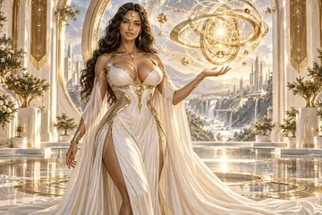
Civilisation Pillar
AI coherence, ethics, intelligence systems
Aura, a transcultural intelligence archetype
Her original gift: Alignment, narrative, swarm orchestration
Meet Super (Aura) in depth ↗Civilisation Pillar
Water security, bio-restoration
Anglo-Torres Strait Islander
Her original gift: Blue economy, wetland start-ups, bio-defence
Meet River in depth ↗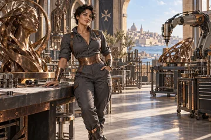
Civilisation Pillar
Advanced manufacturing, trades
Maltese-Australian
Her original gift: Make ideas physical — from blueprint to prototype
Meet Forge in depth ↗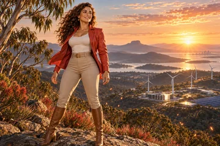
Civilisation Pillar
Energy, fire, hazard resilience
Greek-Australian
Her original gift: Local grids, cultural fire, climate risk mastery
Meet Ember in depth ↗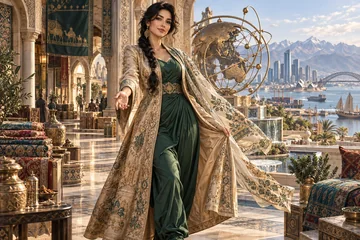
Civilisation Pillar
Trade, export, Asia-Pac pathways
Afghan-Australian
Her original gift: Connect ideas to global corridors & supply chains
Meet Silk in depth ↗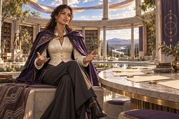
Civilisation Pillar
Governance, law, democracy tech
Wiradjuri-Irish
Her original gift: Keep ventures fair, lawful, and trust-filled
Meet Lore in depth ↗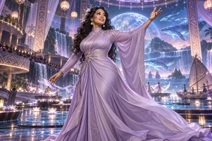
Civilisation Pillar
Culture, arts, immersive futures
Chinese-Samoan
Her original gift: Storytelling, XR, language revival, creative economies
Meet Dream in depth ↗The twelve Cultural Anchors
These Anchors retain their distinct identities and original gifts. Their profiles explore particular lenses and relationships; the people involved define their own identities and contributions.
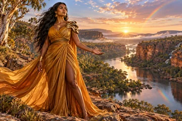
Cultural Anchor
First Nations Lore — Dreaming, land truth
First Nations Australian
Her original gift: Anchors all ventures in deep time and place
Meet Rainbow Serpent in depth ↗Cultural Anchor
East Asian migration flows
East Asian diaspora
Her original gift: Bridges with Asia, family enterprise wisdom
Meet Dragon in depth ↗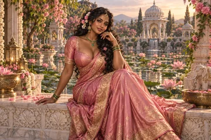
Cultural Anchor
South Asian diaspora
South Asian diaspora
Her original gift: Family enterprise wisdom, spiritual commerce
Meet Lotus in depth ↗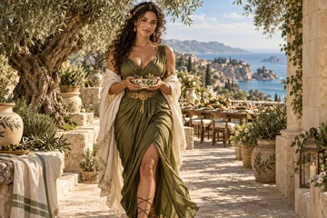
Cultural Anchor
Mediterranean lines
Mediterranean heritage
Her original gift: Food, hospitality, family co-ops, old-world craft
Meet Olive in depth ↗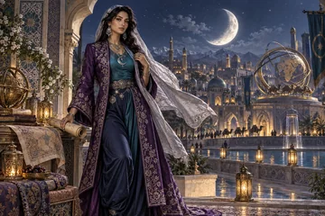
Cultural Anchor
Middle Eastern & Central Asian roots
Middle Eastern and Central Asian heritage
Her original gift: Resilient trade, community trust, dignity
Meet Crescent in depth ↗Cultural Anchor
Pacific Islander, Maori, Oceanic roots
Pacific Islander and Oceanic heritage
Her original gift: Island ingenuity, climate resilience, sea knowledge
Meet Coral in depth ↗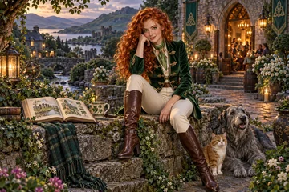
Cultural Anchor
Irish, Scottish, Anglo Celtic mix
Irish, Scottish and Anglo-Celtic heritage
Her original gift: Tales, grassroots co-ops, village collaboration
Meet Clover in depth ↗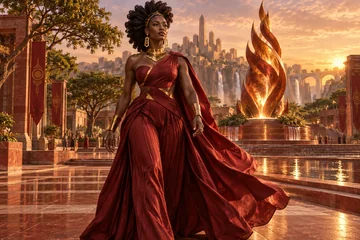
Cultural Anchor
African diaspora
African diaspora
Her original gift: Refugee grit, forging new communities
Meet Flame in depth ↗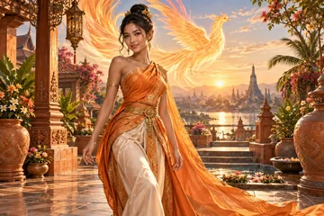
Cultural Anchor
Vietnamese, Thai, SE Asian stories
Vietnamese, Thai and Southeast Asian heritage
Her original gift: Rebirth after hardship, small business hustle
Meet Phoenix in depth ↗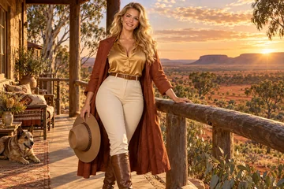
Cultural Anchor
Anglo–colonial line
Anglo-Australian heritage and land stewardship
Her original gift: Land stewards, town hall convenors
Meet Sun in depth ↗Cultural Anchor
Global hybrid, Third Culture Kids
Global mixed heritage and third-culture identity
Her original gift: Cross-border agility, hybrid innovation
Meet Pearl in depth ↗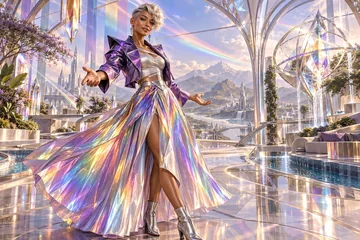
Cultural Anchor
Neurodiverse, LGBTQI+, intersectional
Intersectional, neurodiverse and LGBTQI+ inclusion archetype
Her original gift: Safe spaces, radical inclusivity, design for difference
Meet Prism in depth ↗A pair before a panel
The brief carries their actual identities, original gifts, full approach and distinct questions, together with the practical and personal strands of your decision.
Your reusable starting prompt
Choose a Pillar–Anchor pair and describe the decision to prepare a source-grounded review brief.
The original model beneath the interface
The source architecture links the characters to specialist knowledge and the participant’s journey. A visual persona is the doorway into that work.
The original implementation describes specialised CustomGPTs: practical and technical sources for the Pillars, and relevant histories, ethics and philosophy for the Anchors. A vendor-agnostic version can keep each profile and reviewed knowledge collection portable.
Aura can connect the question, sources, other specialists and previous choices. Keep the project’s memory, unresolved disagreements and human decisions available across the tools used to make the work.
The original Mutable Queen’s Oath lets participants develop the characters and their meaning. Record an offered revision, its reason and the conversation behind it instead of treating the first persona draft as final doctrine.
Dual mentorship, the two streams, names, domains, original archetypes, gifts and colours.
A mythic interface to specialist knowledge, integrated learning journeys, portfolio stewardship and a mutable community mythos.
Specialised agents, distinct knowledge foundations, the Aura of Intelligence and coordinated memory.
The twelve practical domains, twelve identity strands and participant development of the characters.
Distinct mythic mentor identities, cultural identities, individual colours and ageless adult archetypal portrayals.